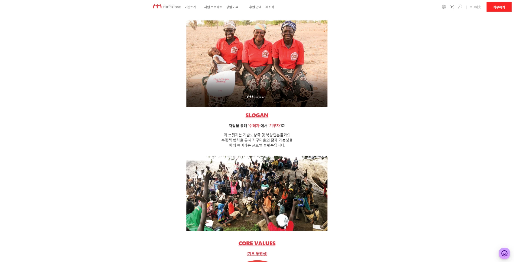
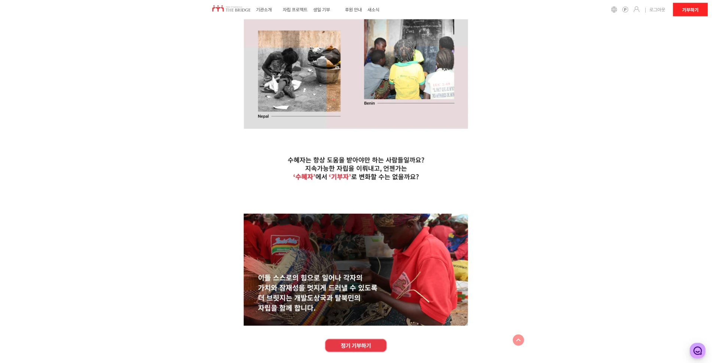

03 / Experience · 2023—2024
기부 서비스
프론트엔드
리뉴얼
React·TypeScript로 기존 웹사이트를 리뉴얼하고, 로그인과 캠페인 탐색부터 기부까지 주요 사용자 흐름을 구현했습니다.
- Role
- 프론트엔드 개발자
- Period
- 2023.09 — 2024.05
- Stack
- React · TypeScript · Zustand
- Scope
- 리뉴얼 · 인증 · 캠페인 · 기부
DONATION / SERVICE FLOWFRONTEND
CAMPAIGNDISCOVERDONATION
FLOWAUTH
STATEEXTERNAL
PG
01 / Context
기부 서비스의 주요 화면을 새로운 프론트엔드 구조로 옮겼습니다.
로그인, 캠페인 탐색, 기부가 여러 화면과 상태에 걸쳐 이어지는 서비스였습니다. React 기반 리뉴얼 과정에서 이 흐름을 일관된 기준으로 다시 구현했습니다.
02 / Build
핵심 화면과 상태 관리 기준을 함께 정리했습니다.
- 기존 웹사이트를 React와 TypeScript 기반으로 리뉴얼했습니다.
- Zustand로 인증과 서비스 상태를 관리했습니다.
- 로그인부터 캠페인 탐색, 기부까지 주요 사용자 화면을 구현했습니다.
- 외부 PG로 이동하는 결제 과정도 서비스 흐름 안에서 점검했습니다.
03 / Result
기부 서비스의 주요 흐름을 구현했습니다.
Core flow
로그인부터 캠페인 탐색·기부까지 주요 사용자 흐름을 구현했습니다.
Consistent state
인증과 서비스 상태를 Zustand로 정리해 화면 간 동작 기준을 맞췄습니다.


